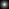
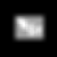
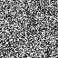
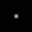
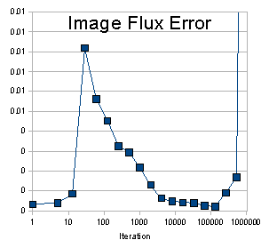
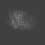
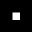
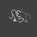
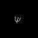
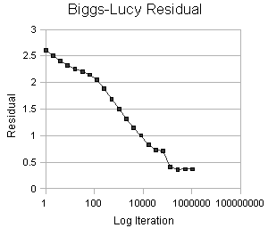

For the latest deconvolution results, click here. For the latest deconvolution results, click here.
Blind Deconvolution
Blind deconvolution is has a lofty goal: To recover both the deconvolved image and the PSF using just the blurred image and some constraints as input. Results from two algorithms are presented here: 1. the Iterative Blind Deconvolvution method of Ayers & Dainty (IBD Method) and 2. The Biggs-Lucy Iterative methods (BL Method). In both algorithms the required constraint information is quite minimal (i.e. non-negativity and support). The PSF is not known (often just a plain or random pixel field is used as prior estimate).
In the Biaram program DeconIB I have implemented an IBD algorithm based on the Ayers & Dainty method: G. R. Ayers and J. C. Dainty, Iterative blind deconvolution method and its applications. Optics Letters, (1988); 13:547-549.This method iterates between the Fourier and spatial domain imposing these constraints at each step to refine the solution.
The results of applying this method to a 64 x 64 pixel synthetic image blurred in the computer by a PSF (a 9x9 pixel symmetrical geometric intensity progression) are presented here. The images are shown at twice actual size and are contrast stretched.
In the Biaram program DeconBMI I have implemented the algorithm (see: D. S. C. Biggs and M. Andrews, Asymmetric iterative blind deconvolution of multiframe images. Proc. SPIE, (1998); 346:1-33.
This method iterates between a number of image-refineing cycles and a (usually different) number of PSF refining cycles at each major iteration to refine the solution. The 'cycles' are just iterations of a usual-type Lucy-Richardson method which uses the currest PSF estimate when doing image refinement and then switches the roles of image and PSF to use the current image estimate (as if it were a PSF) to refine the current PSF estimate
The results of applying this method to a 64 x 64 pixel synthetic image blurred in the computer by a PSF (a 15x15 pixel asymmetrical PSF in the shape of a Greek 'Psi') are presented here. The images are shown at twice actual size and the PSF images are shown contrast stretched.
23.02.2008
Experiment 1: Ayers & Dainty Method
| Ground Truth: a) The test image, b) the true PSF. Neither of these images are used as input to the method. |
| a) b)  |
| Input Images: a) The blurred test image, b) The estimate of the PSF (a random pixel field). For this experiment I also use the known support area of the PSF (i.e. 9x9 pixels) but no information about the support of the image is used |
| a)  b) |
Result: a) The estimate of the deconvolved image, b) The estimate of the PSF. These results were obtained after 524285 iterations. |
| a) b)  |
| Convergence Measure: Unlike non-blind methods, the program does not have access to the true PSF so cannot use residuals as a measure of convergence (because residuals require you to convolve the current estimate with the PSF to see how close the result is to the input blurred image). For this reason we need some other measure of how good the current solution is likely to be. It makes sense to use some measure based on how close to the constraints the current solution is. Below is shown a graph of the image flux constraint (the true solution must have the same total flux as the input blurred image). This suggests that convergence is not uniform or stable. Things appear to get worse before settling down then the error shoots off the scale as the iterations increase. This unpredictability of convergence is just one of the many practical problems faced with blind deconvolution methods. |
 |
Experiment 2: Biggs-Lucy Method
| Input Images: a) The blurred test image, b) The estimate of the PSF (a plain pixel field). For this experiment I also use the known support area of the PSF (i.e. 15x15 pixels). Knowledge of the maximum and minimum grey levels in the image solution was used for constraints but no information about the spatial support of the image is used. Ground truth image and PSF are not shown but are very similar to the results of the deconvolution shown below. |
| a)  b) |
| Result: a) The estimate of the deconvolved image, b) The estimate of the PSF. These results were obtained after 1048576 major iterations. The image and PSF cycels were equally matched in this experiment at 1 cycle each per major iteration. |
| a)  b) |
Convergence Measure: The value for the 'residual' is calculated as the sum of the absolute differences from 1.0 of the ratio: (convolved estimate) / (input image)
The result is divided by the number of pixels in the solution to give residual per pixel and is then multiplied by 100 to give the residual per 100 pixels. Iterations are shown on a log scale. Note the sudden 'bend' in the graph at about 100 iterations. This indicates a sudden 'snap' of the solution as it catches onto the 'right' path. It is clear that the solution velocity is complicated and not simply linear or logarithmic. |
 |
|


 Dr P. J. Tadrous 2000-2026
Dr P. J. Tadrous 2000-2026